| 日付 | 2018年9月9日（日） |
|---|---|
| 山域 | 御坂･天子山塊 |
| メンバー | 家族（妻、長女・7歳、長男・5歳） |
| 山行形態 | 子連れ日帰り |
| アクセス | 車 |
| ルート (Map) | すずらん群生地駐車場 (9:06) - (9:30) 日向坂峠 - (11:03) 黒岳 - (11:07) 展望台 (12:00) - (13:00) 林道 - (13:10) すずらん群生地駐車場 |
本日は東京、神奈川は晴予報だが、北の方はあまり天気が良くなさそうだ。
丹沢の畦ヶ丸にでも行こうと考えたが、暑い山は嫌という意見があり、別の山を探す。
近場で涼しそうな山はあまりないのだが、御坂山塊の最高峰・黒岳であれば、
登り始めの標高も高く暑すぎるということはなさそうだ。
林道脇の小さな駐車スペースに車を停めて登山開始。標高1370m。
最初は林道を歩いて登山口を目指す。
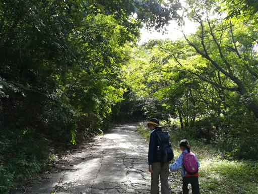
緑色のドングリがたくさん落ちている。先日の台風の影響だろうか？
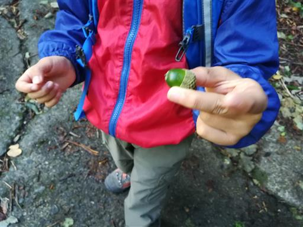
登山口を探しながら車道を歩いたが、見つからなかったため日向坂峠まで歩き、
ここから登山を開始することにする。
途中で王子社有林と書かれた標識のある道があったが、そこが登山口だったのだろうか？
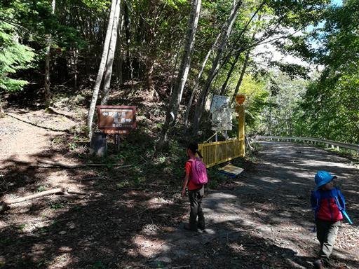
明るい林の中を登って行く。
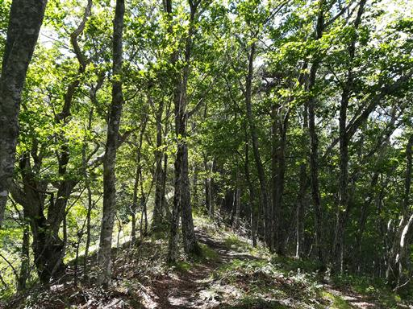
息子が緑色の不思議な物体を拾う。
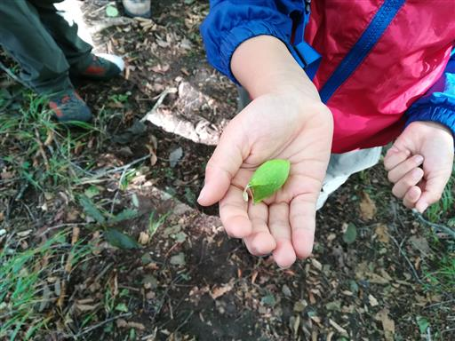
振るとカサカサと音がしたのに、中を開けると緑色の液体が出てくる。
結局、植物だったのかどうかも含めて正体は不明だった。
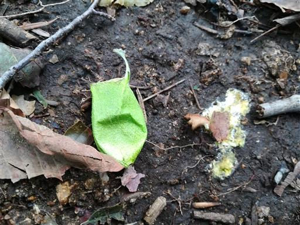
気持ちの良い樹林帯が続く。周囲はブナの木が多い。
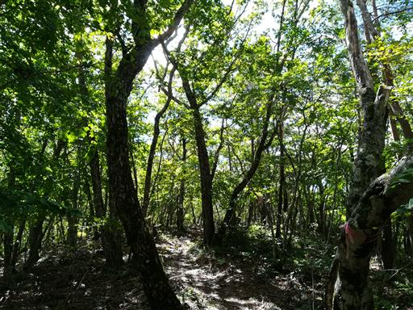
ホコリタケ？叩くと煙が出るよと教えてあげる。
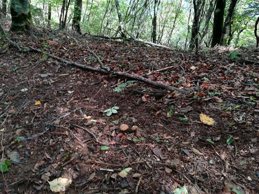
木の枝で容赦なく叩く子供たち。それでも尽きることなく煙が出続ける。
煙の正体は胞子なので、来年は周囲がキノコだらけになるのだろうか？
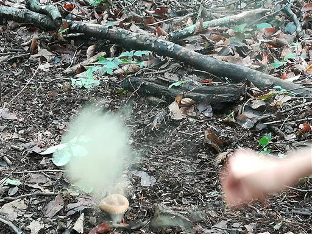
トリカブトの花がたくさん咲いている。この時期の唯一目立つ花だ。
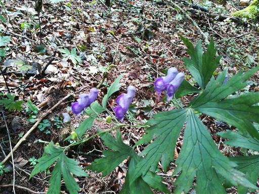
黒岳山頂に到着する。標高1793m。
山頂は木に囲まれて展望は全くない。
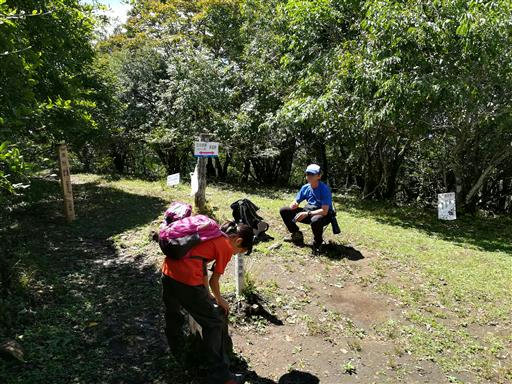
山頂から歩いて5分ほどの展望台に移動する。
天気は悪くないのだが、残念ながら富士山は雲の中だ。
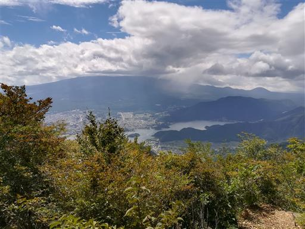
御坂山塊の山々も少しだけ雲に覆われている。
この山は雲の外でラッキーだった。
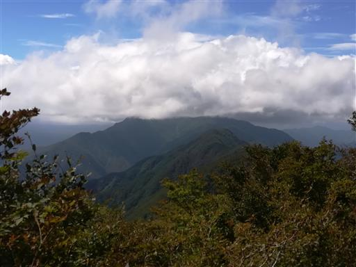
しばらくすると雲がとれてきて富士山の山頂部が頭を出す。
久し振りに近くから望む富士山はやっぱり美しい。
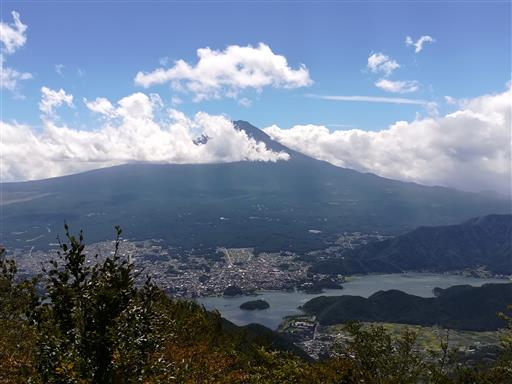
空には天使の羽のような雲が浮かんでいる。
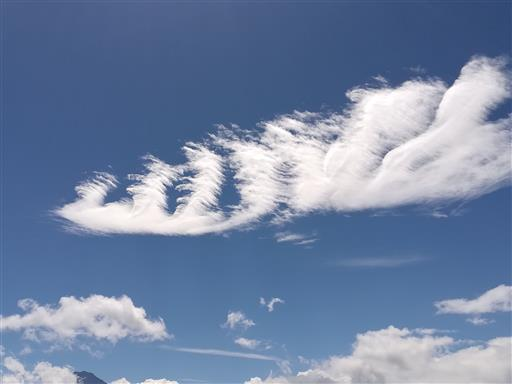
枯木に巨大キノコがたくさん生えている。
食べられるキノコか分からないが、食べたら満腹になりそうだ。
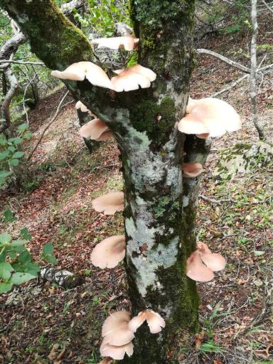
下山はすずらん峠経由の道を歩くことにする。
傾斜が緩やかで歩きやすい道だ。
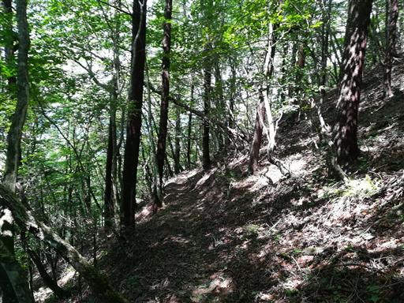
一部登山道が半分崩壊している。やっぱり歩きやすくない道だ。
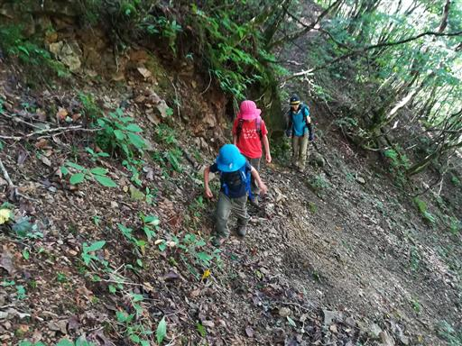
あっという間に林道に下山する。標識に「現在通り抜けできません」と書かれている。
そういう情報は上の分岐点にも記載しておいて欲しい。
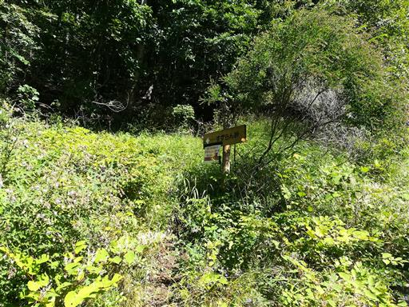
あとは林道をのんびり歩いていく。
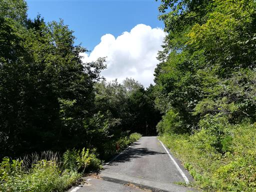
駐車スペースに到着。
最近膝が痛いので、今回初めて新調したストックを使ってみた。
便利なところがある反面、邪魔になることも多い。ここは慣れるしかない。
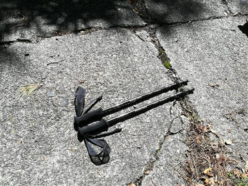
子供たちが拾った実など。今日は緑色のドングリが多かった。
短い登山道でちょっと歩き足りない部分はあったが、
久し振りに道草を食いながらゆっくり歩けた登山だった。
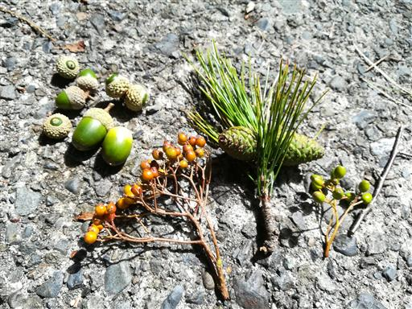